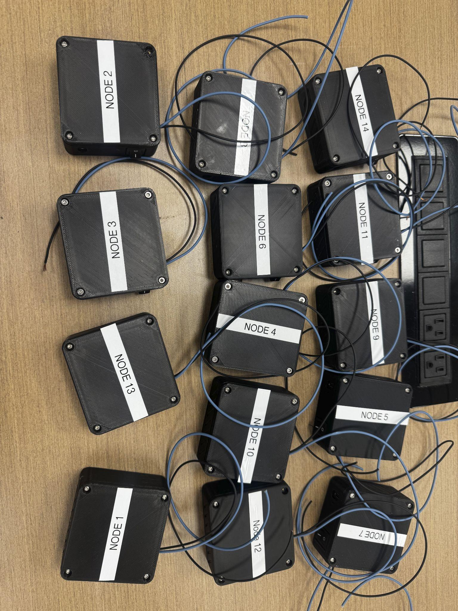

I design and build custom PCBs, embedded firmware, and mechanical systems for medical devices and robotics, from a three-revision wearable ECG platform to an RS-485 sensor array validated at 400 Hz with zero packet loss. Co-founder of Berta Medical; contributor to ongoing soft-robotics and exoskeleton research at Rowan.
Selected Projects
Technical deep dives into the most representative hardware work: PCB revisions, failure analysis, and validated results.

Self-Reconfigurable Soft Robotic Modules
Iterated four generations of the flexible mainboard driving actuation and I2C comms for a self-reconfigurable soft robot, cited in a forthcoming publication.
Read Technical Breakdown →
Fall-Prevention Exoskeleton
Own the electrical, embedded, and test-engineering side of a pneumatically-actuated hip exoskeleton (an 8-node RS-485 sensing array and a 192-trial force-testing campaign), heading toward human trials.
Read Technical Breakdown →
Subaru Technical Training Internship
Scaled a single bench prototype into a 14-node ESP-NOW mesh fleet with a live browser control dashboard, plus a Time-of-Flight sensing stack on an autonomous demo vehicle.
Read Technical Breakdown →.jpg)
Berta Medical - Wearable ECG Platform
Co-founded a wearable ECG startup and owned the hardware stack through three PCB revisions, from off-the-shelf modules to an AWS-connected wearable.
Read Technical Breakdown →
Search-and-Rescue UAV: SAME Rowan
Authored the technical proposal that secured a $4,640 grant for a 7-ft composite search-and-rescue UAV and direct its power-distribution subframe.
Read Technical Breakdown →Technical Skills
Hands-on skills spanning the full product development cycle.
SMD Soldering · Flex PCBs · ENIG
Signal Integrity · DFM
GD&T · Technical Drawing
DFM · Tolerance Analysis
Raspberry Pi · Python · ROS
MQTT · I2C · SPI · UART
FDM 3D Printing (ABS, PLA, TPU)
Sheet Metal · Heat-Set Inserts
Git · Linux · Arduino IDE
Static Stress Simulation
Hardware-in-the-Loop
Who I Am
I'm a junior studying Engineering Entrepreneurship at Rowan University, and I spend most of my time in the lab designing systems that merge mechanics, electronics, and software. Whether it's CNC machining a custom load cell, designing a flex PCB for a soft robotics research lab, or pitching a medical wearable startup at a venture competition, I'm drawn to the full lifecycle of turning an idea into a working product.
My projects span autonomous robots, wearable medical devices, custom control hardware, and precision instruments. I've designed and assembled six custom PCBs, co-founded Berta Medical, and contributed to multiple research efforts at Rowan. I'm currently seeking internship opportunities where I can apply hands-on engineering skills to real-world product development.
I also lead Rowan's Society of American Military Engineers chapter as President, where I rebuilt a dormant chapter and authored the technical proposal that won a $4,640 grant from the SAME Philadelphia Post to build a composite search-and-rescue UAV.